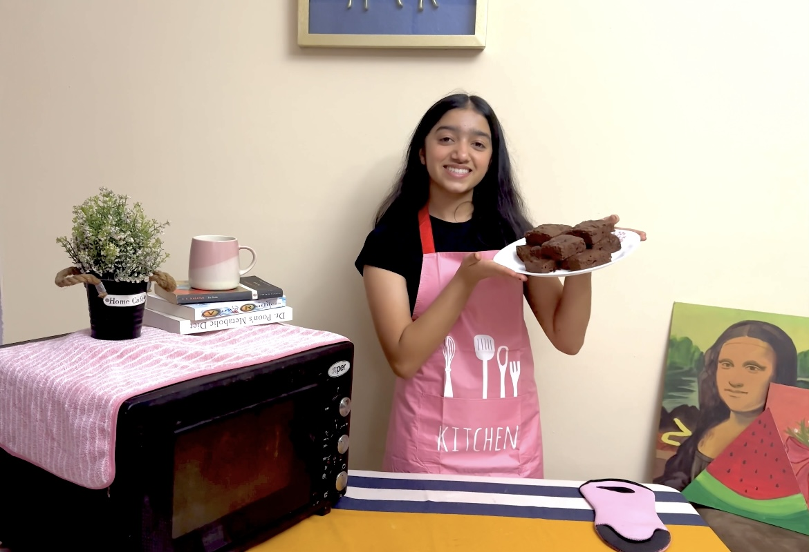

E"Cooking, drawing, and painting have always been my little escapes from the chaos of everyday life. There’s something about chopping ingredients, mixing flavors, and seeing a dish come together that feels almost therapeutic. The same goes for art—whether I’m sketching or painting, I get lost in the process, letting my mind wander while my hands do the work. It’s in those moments that I feel the most at peace, completely in my own world. Creating something—whether on a plate or on a canvas—makes me happy, and I love how both cooking and art let me express myself in different ways." This makes it sound more like something you'd naturally say! Let me know if you want any more tweaks. 😊🎨🍳
